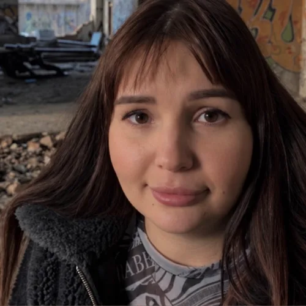
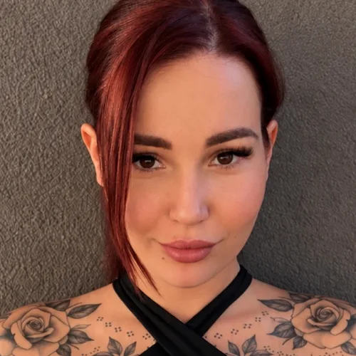
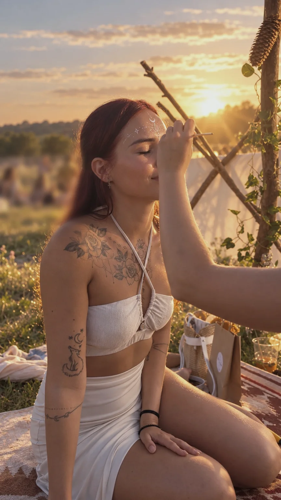
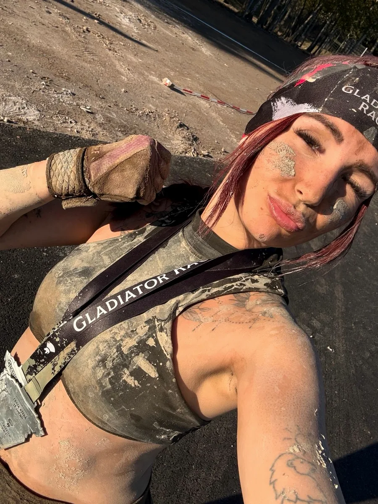

Recovery & lifestyle coaching
More than support on the path of recovery.
One-to-one guidance from someone who knows the path of recovery from her own experience.
A path that, back then, even doctors considered unlikely.
We start with stabilisation, continue with recovery – and if you want, we go even further: to rewriting your own story through the Panthera concept.
For people after mental illness, burnout, a personal crisis or a traumatic relationship. No stigma, no templates, and from wherever you feel safe.

Not only for mental illness
Peer consultation draws on accredited practice and on a personal story that isn't out of a textbook.
Why not only mental illness? Because my story had big themes long before the illness came. That's why I understand a childhood without a sense of safety, an empty identity and zero self-confidence, emotional dependence in an almost decade-long abusive relationship with a narcissistic partner, anxiety and panic attacks. Deep work on identity and pushing my own limits through sport and personal growth were my years-long path to finally creating a life on my own terms and having a healthy relationship with myself. I came to understand the magic of investing your energy where it is truly needed.
The prognosis wasn't final
Years later, though, a bigger test came. Covid, and with it years of psychotic episodes within a diagnosed bipolar affective disorder, unsuccessful treatment with electroconvulsive therapy, and finally the doctors' prognosis at the age of 25: full disability, with no prospect of recovery. Part of that experience is also the financial, legal and existential damage that mental illness causes in the gaps of the system – something that is talked about far too little in care.
The path of recovery was neither perfect nor linear, but it was real. Therapy gave me space to share, but I needed guidance. And so, once again – through titrating discomfort, strong willpower, somatic work with the body, working with stigma and faith in my inner heroine – I proved that recovery is possible even despite the doctors' negative prognosis.


For me, recovery doesn't just mean surviving. It means returning to life – to people, to the things I enjoy, and fully back to sport.


Every story is unique, though. That's why I work with my experience above all as a peer element of support, humanity, shared experience and hope – not as an exact model of recovery.
Step by step, back into your own life
Stabilisation
If this is where you are right now: getting the crisis under control, returning to a functioning life and feeling like yourself again.
Recovery
The classic peer approach and its tools: peer methodology, crisis plans, the Semafor (traffic-light) tool, working with stigma and practical guidance.
Themes of recovery
Working with identity, loss and acceptance, strengthening trust in your own worth and finding direction.
The goal is to return to your own life. And that is a legitimate and complete goal.
What was it all for?
After my recovery, I kept working on myself and went through an inner transformation that I call integrating the inner heroine. It's the point where a person no longer just says “I survived, I recovered, I'm putting my life back together” – but sees the meaning of the whole chapter of illness and crisis, and draws from it life energy, psychological resilience, authenticity and the ability to become a better version of themselves because of it.
Stabilisation and recovery are a solid foundation. The Panthera concept is an invitation for those who feel they want to go even further.
It grew out of my own life practice – out of the conviction and experience that crisis and illness can be a catalyst for a transformation that would never have happened without them. Peer practice knows how to work with the role of the patient on the way back to life. Panthera works with identity more deeply and, in line with the latest research, treats it as something changeable, not as a fixed definition of a person.
Panthera asks a single question: what was it all for? And that question is the first chapter of the authentic story of an integrated heroine.
A new story
Turning a story of survival into a story of redemption: “This happened to me, and it made me who I am.”
The heroine archetype
Conscious work with identity and with the archetype of the heroine on her own journey.
The shadow as a resource
Integrating the shadow not as a burden, but as a source of strength.
The result is a stronger identity, psychological resilience and the ability to truly be yourself – in harmony with the values that ring true within you. Our personality may not guarantee that we won't face more crises in life. But it does shape how we respond to them. And above all – what kind of life we actively create.
Panthera is an invitation, not an obligation. It's for those in whom the question of meaning quietly resonates of its own accord.
Whatever you're looking for, I'm here
If you long for human acceptance, support, understanding grounded in lived experience and perhaps some direction, I'm here as your peer to walk alongside you on the path of recovery.
And if you already have your own story of recovery from illness or a life crisis and want to move further, we can look together at what valuable things lie hidden in you beneath it all – precisely because of those great trials.
We start with an initial consultation
Initial consultation
90 minutesWe get to know each other, map out where you are and what you need, and agree on the next steps.
Monthly guidance
2 sessions a month · 60 minutesCZK 900 per session. Regular support with space between sessions.
Intensive guidance
4 sessions a month · 60 minutesCZK 800 per session. Every week, for times when you need more support.
All sessions take place live online. A single session outside monthly guidance: CZK 1,000 / 60 minutes.
Peer mentoring does not replace psychiatric or psychotherapeutic care; it complements it. In an acute crisis, call 112 or the Czech mental health first-aid line 116 123 (24/7, free of charge).